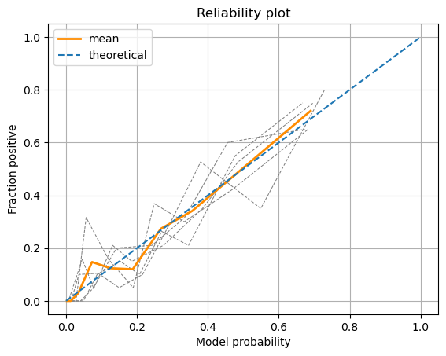
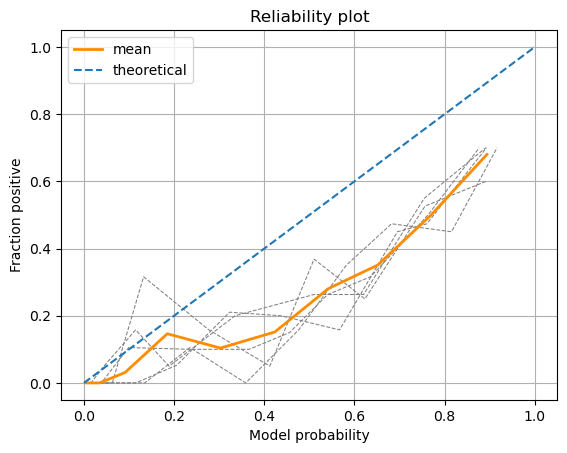
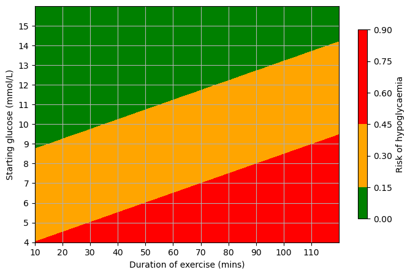
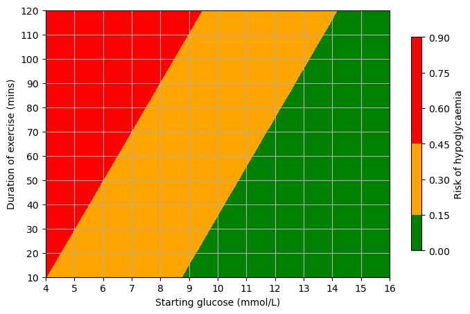
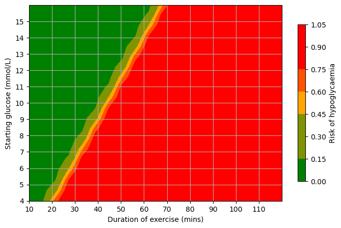
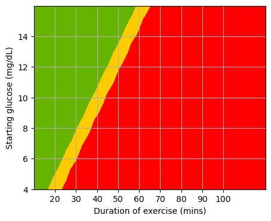
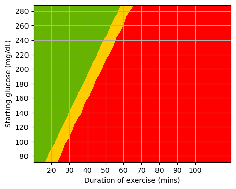

Heatmap (countour plot) of model predictions#
Load packages#
import itertools
import matplotlib.pyplot as plt
import matplotlib
import numpy as np
import pandas as pd
import matplotlib as mpl
# Import machine learning methods
from sklearn.linear_model import LogisticRegression
from sklearn.model_selection import train_test_split
from sklearn.preprocessing import StandardScaler
from sklearn.metrics import recall_score, precision_score
import hyperopt
#import model_helper
import ml_helper as ml_help
import tune
from xgboost import XGBClassifier
from sklearn.impute import KNNImputer
from imblearn.over_sampling import SMOTE
Load data#
#SMOTE = False
K_NEIGHBOURS = 5
N_SPLITS = 10
TUNE = True
directory = '../../Data/tidy_data/'
FILENAME = 'ml_during_hypo_5.csv'
df = pd.read_csv(directory + FILENAME)
target_columns = 'y_hypo'
df.dropna(inplace=True, subset=['start_glc','duration'])
FILENAME = ‘ml_during_hyper.csv’ df = pd.read_csv(directory + FILENAME) target_columns = ‘y_hyper’ df.dropna(inplace=True, subset=[‘start_glc’,’duration’])
X = df[['start_glc','duration']]
y = df[target_columns]
y.value_counts()
False 758
True 220
Name: y_hypo, dtype: int64
Restrict data to two features before model fitting#
Split into training and test sets#
X_train, X_test, y_train, y_test = train_test_split(X, y, test_size = 0.1)
X_train, y_train = SMOTE().fit_resample(X_train, y_train)
Standardise data#
def standardise_data(X_train, X_test):
# Initialise a new scaling object for normalising input data
sc = StandardScaler()
# Set up the scaler just on the training set
sc.fit(X_train)
# Apply the scaler to the training and test sets
train_std=sc.transform(X_train)
test_std=sc.transform(X_test)
return train_std, test_std
X_train_std, X_test_std = standardise_data(X_train, X_test)
#X_train_std, X_test_std = standardise_data(X, X)
X = StandardScaler().fit_transform(X)
Fit model and check accuracy#
# Define hyperparameter space
params = {'penalty' : hyperopt.hp.choice('penalty', ['l2', 'l1']), # , 'l1'
'C' : hyperopt.hp.loguniform('C', -4, 4), #20
'solver' : hyperopt.hp.choice('solver', ['lbfgs', 'liblinear']), #'max_iter': [1000] 'liblinear',
}
model = LogisticRegression
best_params = tune.hyperopt_tune(model, params, None, X_train_std, y_train,
'roc_auc', 60)
tuned_model = model(**best_params)
tuned_model.fit(X_train_std,y_train)
100%|██████████| 60/60 [00:02<00:00, 21.18trial/s, best loss: -0.836539048455203]
LogisticRegression(C=0.06662641355374649, solver='liblinear')
tuned_model.coef_
array([[-1.32253235, 0.38839966]])
# Predict training and test set labels
y_pred_train = tuned_model.predict(X_train_std)
y_pred_test = tuned_model.predict(X_test_std)
y_probs_test = tuned_model.predict_proba(X_test_std)
accuracy_train = np.mean(y_pred_train == y_train)
accuracy_test = np.mean(y_pred_test == y_test)
print ('Accuracy of predicting training data =', accuracy_train)
print ('Accuracy of predicting test data =', accuracy_test)
Accuracy of predicting training data = 0.8147727272727273
Accuracy of predicting test data = 0.8979591836734694
Calibration#
import numpy as np
import pandas as pd
import matplotlib.pyplot as plt
from sklearn.calibration import calibration_curve
from sklearn.ensemble import RandomForestClassifier
from sklearn.model_selection import StratifiedKFold
# Convert data to NumPy arrays (required for stratified k-fold)
X_np = X.values
y_np = y.values
# Set up k-fold splits
number_of_splits = 5
skf = StratifiedKFold(n_splits = number_of_splits, shuffle=True,
random_state=42)
skf.get_n_splits(X_np, y_np)
# Define bins
number_of_bins = 10
# Set up results DataFrames (to get results from each run)
results_model_probability = []
results_fraction_positive = []
# Loop through the k-fold splits
loop_counter = 0
for train_index, test_index in skf.split(X_np, y_np):
# Get X and Y train/test
X_train, X_test = X_np[train_index], X_np[test_index]
y_train, y_test = y_np[train_index], y_np[test_index]
# Set up and fit model
model = LogisticRegression()
model.fit(X_train,y_train)
# Get test set proabilities
y_calibrate_probabilities = model.predict_proba(X_test)[:,1]
# Get calibration curve (use quantile to make sure all bins exist)
fraction_pos, model_prob = calibration_curve(
y_test, y_calibrate_probabilities,
n_bins=number_of_bins,
strategy='quantile')
# record run results
results_model_probability.append(model_prob)
results_fraction_positive.append(fraction_pos)
# Increment loop counter
loop_counter += 1
# Convert results to DataFrame
results_model_probability = pd.DataFrame(results_model_probability)
results_fraction_positive = pd.DataFrame(results_fraction_positive)
%matplotlib inline
# Add individual k-fold runs
for run in range(number_of_splits):
plt.plot(results_model_probability.loc[run],
results_fraction_positive.loc[run],
linestyle='--',
linewidth=0.75,
color='0.5')
# Add mean
plt.plot(results_model_probability.mean(axis=0),
results_fraction_positive.mean(axis=0),
linestyle='-',
linewidth=2,
color='darkorange',
label='mean')
# Add diagonal
plt.plot([0,1],[0,1],
linestyle='--',
label='theoretical')
plt.xlabel('Model probability')
plt.ylabel('Fraction positive')
plt.title('Reliability plot')
plt.grid()
plt.legend()
plt.show()

import numpy as np
import pandas as pd
import matplotlib.pyplot as plt
from sklearn.calibration import calibration_curve
from sklearn.ensemble import RandomForestClassifier
from sklearn.model_selection import StratifiedKFold
# Convert data to NumPy arrays (required for stratified k-fold)
X_np = X.values
y_np = y.values
# Set up k-fold splits
number_of_splits = 5
skf = StratifiedKFold(n_splits = number_of_splits, shuffle=True,
random_state=42)
skf.get_n_splits(X_np, y_np)
# Define bins
number_of_bins = 10
# Set up results DataFrames (to get results from each run)
results_model_probability = []
results_fraction_positive = []
# Loop through the k-fold splits
loop_counter = 0
for train_index, test_index in skf.split(X_np, y_np):
# Get X and Y train/test
X_train, X_test = X_np[train_index], X_np[test_index]
y_train, y_test = y_np[train_index], y_np[test_index]
X_train, y_train = SMOTE().fit_resample(X_train, y_train)
# Set up and fit model
model = LogisticRegression()
model.fit(X_train,y_train)
# Get test set proabilities
y_calibrate_probabilities = model.predict_proba(X_test)[:,1]
# Get calibration curve (use quantile to make sure all bins exist)
fraction_pos, model_prob = calibration_curve(
y_test, y_calibrate_probabilities,
n_bins=number_of_bins,
strategy='quantile')
# record run results
results_model_probability.append(model_prob)
results_fraction_positive.append(fraction_pos)
# Increment loop counter
loop_counter += 1
# Convert results to DataFrame
results_model_probability = pd.DataFrame(results_model_probability)
results_fraction_positive = pd.DataFrame(results_fraction_positive)
%matplotlib inline
# Add individual k-fold runs
for run in range(number_of_splits):
plt.plot(results_model_probability.loc[run],
results_fraction_positive.loc[run],
linestyle='--',
linewidth=0.75,
color='0.5')
# Add mean
plt.plot(results_model_probability.mean(axis=0),
results_fraction_positive.mean(axis=0),
linestyle='-',
linewidth=2,
color='darkorange',
label='mean')
# Add diagonal
plt.plot([0,1],[0,1],
linestyle='--',
label='theoretical')
plt.xlabel('Model probability')
plt.ylabel('Fraction positive')
plt.title('Reliability plot')
plt.grid()
plt.legend()
plt.show()

Check limits of data#
X.min()
start_glc 2.2
duration 10.0
dtype: float64
df.intensity.hist()
<AxesSubplot:>
X.max()
start_glc 22.6
duration 120.0
dtype: float64
Create a grid of evenly spaced feature values#
# After doing the contour plot on full extent values, I reduced age to ages that made a difference in the plot
x1 = np.linspace(4,16,20)
#mg/dl
#x1 = np.linspace(70,260,20)
x2 = np.linspace(10,120,20)
start_glc = []
duration = []
for i in x1:
for j in x2:
start_glc.append(i)
duration.append(j)
Put in DataFrame.
test_df = pd.DataFrame()
test_df['Starting glucose'] = start_glc
#mg/dl
#test_df['Starting glucose'] = test_df['Starting glucose']
test_df['Duration'] = duration
Standardise new test set and get model predictions#
X_train_std, X_test_std = standardise_data(X, test_df)
---------------------------------------------------------------------------
NameError Traceback (most recent call last)
Cell In[13], line 1
----> 1 X_train_std, X_test_std = standardise_data(X, test_df)
NameError: name 'standardise_data' is not defined
y = tuned_model.predict_proba(X_test_std)
# Get probability of survival
y = y[:, 1].flatten()
test_df['y']= y
test_df
| Starting glucose | Duration | y | |
|---|---|---|---|
| 0 | 4.0 | 10.000000 | 0.451788 |
| 1 | 4.0 | 15.789474 | 0.474910 |
| 2 | 4.0 | 21.578947 | 0.498141 |
| 3 | 4.0 | 27.368421 | 0.521379 |
| 4 | 4.0 | 33.157895 | 0.544525 |
| ... | ... | ... | ... |
| 395 | 16.0 | 96.842105 | 0.063014 |
| 396 | 16.0 | 102.631579 | 0.068733 |
| 397 | 16.0 | 108.421053 | 0.074931 |
| 398 | 16.0 | 114.210526 | 0.081638 |
| 399 | 16.0 | 120.000000 | 0.088888 |
400 rows × 3 columns
Reformat data and results for contour plot#
x1_grid, x2_grid = np.meshgrid(x1, x2)
y_grid_hypo = np.reshape(y, x1_grid.shape)
Plot#
fig_hypo = plt.figure(figsize=(8,5))
ax = fig_hypo.add_subplot(111)
#segments = ["green","orange","red"]
segments = [(0.0, 'green'), (0.2, 'green'),(0.2, 'orange'), (0.5, 'orange'),(0.5, 'red'), (1.0, 'red')]
cs = ax.contourf(x2_grid, x1_grid, y_grid_hypo.T,
cmap=matplotlib.colors.LinearSegmentedColormap.from_list("", segments),
vmin = 0, vmax =1)
ax.set_ylabel('Starting glucose (mmol/L)')
ax.set_xlabel('Duration of exercise (mins)')
plt.xticks(np.arange(10, 120,10))
plt.yticks(np.arange(4, 16,1))
# Add a colorbar
cbar = fig_hypo.colorbar(cs, shrink=0.8, extend='neither')
cbar.ax.set_ylabel('Risk of hypoglycaemia')
ax.grid()
#plt.gca().invert_yaxis()
plt.show()
#fig_hypo.savefig('hypoglycemia.svg')

fig_hypo = plt.figure(figsize=(8,5))
ax = fig_hypo.add_subplot(111)
#segments = ["green","orange","red"]
segments = [(0.0, 'green'), (0.15, 'green'),(0.15, 'orange'), (0.5, 'orange'),(0.5, 'red'), (1.0, 'red')]
cs = ax.contourf(x1_grid, x2_grid, y_grid_hypo.T,
cmap=matplotlib.colors.LinearSegmentedColormap.from_list("", segments),
vmin = 0, vmax =1)
ax.set_xlabel('Starting glucose (mmol/L)')
ax.set_ylabel('Duration of exercise (mins)')
plt.yticks(np.arange(10, 130,10))
plt.xticks(np.arange(4, 17,1))
# Add a colorbar
cbar = fig_hypo.colorbar(cs, shrink=0.8, extend='neither')
cbar.ax.set_ylabel('Risk of hypoglycaemia')
ax.grid()
#plt.gca().invert_yaxis()
plt.show()
#fig_hypo.savefig('hypoglycemia.svg')

fig_hypo = plt.figure(figsize=(8,5))
ax = fig_hypo.add_subplot(111)
#segments = ["green","orange","red"]
segments = [(0.0, 'green'), (0.2, 'green'),(0.2, 'orange'), (0.5, 'orange'),(0.5, 'red'), (1.0, 'red')]
cs = ax.contourf(x1_grid, x2_grid, y_grid_hypo.T,
cmap=matplotlib.colors.LinearSegmentedColormap.from_list("", segments),
vmin = 0, vmax =1)
ax.set_xlabel('Starting glucose (mmol/L)')
ax.set_ylabel('Duration of exercise (mins)')
plt.yticks(np.arange(10, 130,10))
plt.xticks(np.arange(4, 17,1))
# Add a colorbar
cbar = fig_hypo.colorbar(cs, shrink=0.8, extend='neither')
cbar.ax.set_ylabel('Risk of hypoglycaemia')
ax.grid()
#plt.gca().invert_yaxis()
plt.show()
#fig_hypo.savefig('hypoglycemia.svg')
test_df[(test_df['y']>0.13 )& (test_df['y']<0.17)]
| Starting glucose | Duration | y | |
|---|---|---|---|
| 140 | 8.421053 | 10.000000 | 0.163742 |
| 160 | 9.052632 | 10.000000 | 0.137530 |
| 161 | 9.052632 | 15.789474 | 0.148939 |
| 162 | 9.052632 | 21.578947 | 0.161117 |
| 182 | 9.684211 | 21.578947 | 0.135257 |
| 183 | 9.684211 | 27.368421 | 0.146509 |
| 184 | 9.684211 | 33.157895 | 0.158525 |
| 204 | 10.315789 | 33.157895 | 0.133015 |
| 205 | 10.315789 | 38.947368 | 0.144111 |
| 206 | 10.315789 | 44.736842 | 0.155967 |
| 207 | 10.315789 | 50.526316 | 0.168606 |
| 226 | 10.947368 | 44.736842 | 0.130805 |
| 227 | 10.947368 | 50.526316 | 0.141747 |
| 228 | 10.947368 | 56.315789 | 0.153443 |
| 229 | 10.947368 | 62.105263 | 0.165917 |
| 249 | 11.578947 | 62.105263 | 0.139415 |
| 250 | 11.578947 | 67.894737 | 0.150952 |
| 251 | 11.578947 | 73.684211 | 0.163263 |
| 271 | 12.210526 | 73.684211 | 0.137115 |
| 272 | 12.210526 | 79.473684 | 0.148495 |
| 273 | 12.210526 | 85.263158 | 0.160644 |
| 293 | 12.842105 | 85.263158 | 0.134848 |
| 294 | 12.842105 | 91.052632 | 0.146071 |
| 295 | 12.842105 | 96.842105 | 0.158058 |
| 315 | 13.473684 | 96.842105 | 0.132612 |
| 316 | 13.473684 | 102.631579 | 0.143680 |
| 317 | 13.473684 | 108.421053 | 0.155506 |
| 318 | 13.473684 | 114.210526 | 0.168115 |
| 337 | 14.105263 | 108.421053 | 0.130407 |
| 338 | 14.105263 | 114.210526 | 0.141321 |
| 339 | 14.105263 | 120.000000 | 0.152988 |
test_df[(test_df['Starting glucose']==9.0) & (test_df['Duration']==15.0)]
| Starting glucose | Duration | y |
|---|
fig_hypo = plt.figure(figsize=(8,5))
ax = fig_hypo.add_subplot(111)
cs = ax.contourf(x2_grid, x1_grid, y_grid_hypo.T,
cmap=matplotlib.colors.LinearSegmentedColormap.from_list("", ["green","orange","red"], N=3),
vmin = 0, vmax =1)
ax.set_ylabel('Starting glucose (mmol/L)')
ax.set_xlabel('Duration of exercise (mins)')
plt.xticks(np.arange(10, 120,10))
plt.yticks(np.arange(4, 16,1))
# Add a colorbar
cbar = fig_hypo.colorbar(cs, shrink=0.8, extend='neither')
cbar.ax.set_ylabel('Risk of hypoglycaemia')
ax.grid()
#plt.gca().invert_yaxis()
plt.show()
#fig_hypo.savefig('hypoglycemia.svg')

y.max()
0.9917309686829713
cmap='jet'
## Create figure
fig = plt.figure(figsize=(8,5))
ax = fig.add_subplot(111)
cs = ax.contourf(x2_grid, x1_grid, y_grid_hypo.T, cmap='jet', levels=100)
ax.set_ylabel('Starting glucose (mmol/L)')
ax.set_xlabel('Duration of exercise (mins)')
#ax.set_title(title)
# Add a colorbar
cbar = plt.colorbar(cs, shrink=0.8, norm=mpl.colors.Normalize(vmin=0, vmax=1))
cbar.ax.set_ylabel('Risk of hypoglycaemia')
ax.grid()
---------------------------------------------------------------------------
NameError Traceback (most recent call last)
Cell In[1], line 2
1 ## Create figure
----> 2 fig = plt.figure(figsize=(8,5))
3 ax = fig.add_subplot(111)
4 cs = ax.contourf(x2_grid, x1_grid, y_grid_hypo.T, cmap='jet', levels=100)
NameError: name 'plt' is not defined
# Functions for determining the British and American glucose axis for the plots
def mmol2mg(x):
return x / 0.0555
def mg2mmol(x):
return x * 0.0555
fig_hypo = plt.figure(figsize=(5,4))
ax = fig_hypo.add_subplot(111)
secax = ax.secondary_yaxis('right', functions=(mmol2mg, mg2mmol))
cs = ax.contourf(x2_grid, x1_grid, y_grid_hypo.T,
cmap='viridis_r', vmin = 0, vmax =1, levels=10)
ax.set_ylabel('Starting glucose (mmol/L)')
secax.set_ylabel('Starting glucose (mg/dL)')
ax.set_xlabel('Duration of exercise (mins)')
plt.xticks(np.arange(20, 110,10))
plt.yticks(np.arange(4, 17,1))
# Add a colorbar
cbar = fig_hypo.colorbar(cs, shrink=0.8, extend='neither', norm=mpl.colors.Normalize(vmin=0, vmax=1))
cbar.ax.set_ylabel('Risk of hypoglycaemia')
ax.grid()
#plt.gca().invert_yaxis()
#plt.show()
fig.tight_layout()
#fig_hypo.savefig('contour_plots/hypo_viridis_10_lvls.svg')
---------------------------------------------------------------------------
NameError Traceback (most recent call last)
Cell In[53], line 3
1 fig_hypo = plt.figure(figsize=(5,4))
2 ax = fig_hypo.add_subplot(111)
----> 3 secax = ax.secondary_yaxis('right', functions=(mmol2mg, mg2mmol))
4 cs = ax.contourf(x2_grid, x1_grid, y_grid_hypo.T,
5 cmap='viridis_r', vmin = 0, vmax =1, levels=10)
7 ax.set_ylabel('Starting glucose (mmol/L)')
NameError: name 'mmol2mg' is not defined
fig_hypo = plt.figure(figsize=(5,4))
ax = fig_hypo.add_subplot(111)
cs = ax.contourf(x2_grid, (x1_grid), y_grid_hypo.T,
cmap=matplotlib.colors.LinearSegmentedColormap.from_list("", ["green","yellow","red"]),
levels=2, vmin = 0, vmax =1)
ax.set_ylabel('Starting glucose (mg/dL)')
ax.set_xlabel('Duration of exercise (mins)')
plt.xticks(np.arange(20, 110,10))
plt.yticks(np.arange(4,16, 2))
# Add a colorbar
#cbar = fig_hypo.colorbar(cs, shrink=0.8, extend='neither')
#cbar.ax.set_ylabel('Risk of hypoglycaemia')
ax.grid()
#plt.gca().invert_yaxis()
#plt.show()
#fig_hypo.savefig('contour_plots/hypo_traffic_light_4_bins_mg_dl.svg')

fig_hypo = plt.figure(figsize=(5,4))
ax = fig_hypo.add_subplot(111)
cs = ax.contourf(x2_grid, (x1_grid/ 0.0555), y_grid_hypo.T,
cmap=matplotlib.colors.LinearSegmentedColormap.from_list("", ["green","yellow","red"]),
levels=2, vmin = 0, vmax =1)
ax.set_ylabel('Starting glucose (mg/dL)')
ax.set_xlabel('Duration of exercise (mins)')
plt.xticks(np.arange(20, 110,10))
plt.yticks(np.arange(80,300, 20))
# Add a colorbar
#cbar = fig_hypo.colorbar(cs, shrink=0.8, extend='neither')
#cbar.ax.set_ylabel('Risk of hypoglycaemia')
ax.grid()
#plt.gca().invert_yaxis()
#plt.show()
#fig_hypo.savefig('contour_plots/hypo_traffic_light_4_bins_mg_dl.svg')

fig, ax = plt.subplots(1,2, figsize=(10, 4))
ax[0] = fig_hyper.add_subplot(111)
cs = ax[0].contourf(x2_grid, x1_grid, y_grid_hyper.T, cmap='jet', levels=100)
ax[0].set_ylabel('Starting glucose (mmol/L)')
ax[0].set_xlabel('Duration of exercise (mins)')
# Add a colorbar
cbar = fig_hyper.colorbar(cs, shrink=0.8)
cbar.ax[0].set_ylabel('Risk of hyperglycaemia')
ax[0].grid()
#plt.gca().invert_yaxis()
#plt.show()
#fig_hyper.savefig('hyperglycemia.svg')
---------------------------------------------------------------------------
NameError Traceback (most recent call last)
Cell In[52], line 2
1 fig, ax = plt.subplots(1,2, figsize=(10, 4))
----> 2 ax[0] = fig_hyper.add_subplot(111)
3 cs = ax[0].contourf(x2_grid, x1_grid, y_grid_hyper.T, cmap='jet', levels=100)
5 ax[0].set_ylabel('Starting glucose (mmol/L)')
NameError: name 'fig_hyper' is not defined
fig, ax = plt.subplots(1,2)
ax[0] = fig_hypo
ax[1] = fig_hyper
y_hypo = y_grid
y_hyper = y_grid
ax = fig_hypo.add_subplot(111)
fig, ax = plt.subplots(1,2, figsize=(10, 4))
cs = ax[0].contourf(x2_grid, x1_grid, y_grid_hypo.T, cmap='jet', levels=100)
ax[0].set_ylabel('Starting glucose (mmol/L)')
ax[0].set_xlabel('Duration of exercise (mins)')
cs = ax[1].contourf(x2_grid, x1_grid, y_grid_hyper.T, cmap='jet', levels=100)
ax[1].set_ylabel('Starting glucose (mmol/L)')
ax[1].set_xlabel('Duration of exercise (mins)')
ax[0].set_title('a) Prediction of low glucose event')
ax[1].set_title('b) Prediction of high glucose event')
# Add a colorbar
cbar = fig.colorbar(cs, shrink=0.8)
#cbar = ax[1].colorbar(cs, shrink=0.8)
cbar.ax.set_ylabel('Risk of event')
#cbar.ax[1].set_ylabel('Risk of high event')
ax[0].grid()
ax[1].grid()
fig.tight_layout()
fig.savefig('fig_for_easd.jpg')
a) prediction of glucose less than 7
tuned_model.predict(np.array([[5],[40]]))